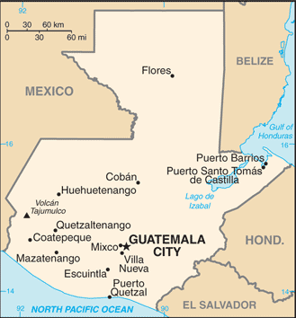
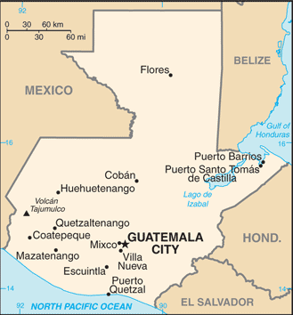

Central America and Caribbean :: GUATEMALA
Introduction :: GUATEMALA
-
The Maya civilization flourished in Guatemala and surrounding regions during the first millennium A.D. After almost three centuries as a Spanish colony, Guatemala won its independence in 1821. During the second half of the 20th century, it experienced a variety of military and civilian governments, as well as a 36-year guerrilla war. In 1996, the government signed a peace agreement formally ending the internal conflict, which had left more than 200,000 people dead and had created, by some estimates, about 1 million refugees.
Geography :: GUATEMALA
-
Central America, bordering the North Pacific Ocean, between El Salvador and Mexico, and bordering the Gulf of Honduras (Caribbean Sea) between Honduras and Belize15 30 N, 90 15 WCentral America and the Caribbeantotal: 108,889 sq kmland: 107,159 sq kmwater: 1,730 sq kmcountry comparison to the world: 108slightly smaller than Pennsylvaniatotal: 1,667 kmborder countries (4): Belize 266 km, El Salvador 199 km, Honduras 244 km, Mexico 958 km400 kmterritorial sea: 12 nmexclusive economic zone: 200 nmcontinental shelf: 200-m depth or to the depth of exploitationtropical; hot, humid in lowlands; cooler in highlandstwo east-west trending mountain chains divide the country into three regions: the mountainous highlands, the Pacific coast south of mountains, and the vast northern Peten lowlandsmean elevation: 759 melevation extremes: lowest point: Pacific Ocean 0 mhighest point: Volcan Tajumulco 4,220 m (highest point in Central America)petroleum, nickel, rare woods, fish, chicle, hydropoweragricultural land: 41.2%arable land 14.2%; permanent crops 8.8%; permanent pasture 18.2%forest: 33.6%other: 25.2% (2011 est.)3,375 sq km (2012)the vast majority of the populace resides in the southern half of the country, particularly in the mountainous regions; more than half of the population lives in rural areasnumerous volcanoes in mountains, with occasional violent earthquakes; Caribbean coast extremely susceptible to hurricanes and other tropical stormsvolcanism: significant volcanic activity in the Sierra Madre range; Santa Maria (3,772 m) has been deemed a Decade Volcano by the International Association of Volcanology and Chemistry of the Earth's Interior, worthy of study due to its explosive history and close proximity to human populations; Pacaya (2,552 m), which erupted in May 2010 causing an ashfall on Guatemala City and prompting evacuations, is one of the country's most active volcanoes with frequent eruptions since 1965; other historically active volcanoes include Acatenango, Almolonga, Atitlan, Fuego, and Tacanadeforestation in the Peten rainforest; soil erosion; water pollutionparty to: Antarctic Treaty, Biodiversity, Climate Change, Climate Change-Kyoto Protocol, Desertification, Endangered Species, Environmental Modification, Hazardous Wastes, Law of the Sea, Marine Dumping, Ozone Layer Protection, Ship Pollution, Wetlands, Whalingsigned, but not ratified: none of the selected agreementsthere are no natural harbors on the west coast
People and Society :: GUATEMALA
-
15,460,732 (July 2017 est.)country comparison to the world: 70noun: Guatemalan(s)adjective: Guatemalanmestizo (mixed Amerindian-Spanish - in local Spanish called Ladino) and European 60.1%, Maya 39.3% (K'iche 11.3%, Q'eqchi 7.6%, Kaqchikel 7.4%, Mam 5.5%, other 7.5%), non-Maya, non-mestizo 0.15% (Xinca (indigenous, non-Maya), Garifuna (mixed West and Central African, Island Carib, and Arawak)), other 0.5% (2001 est.)Spanish (official) 68.9%, Maya languages 30.9% (K'iche 8.7%, Q'eqchi 7%, Mam 4.6%, Kaqchikel 4.3%, other 6.3%), other 0.3% (includes Xinca and Garifuna)note: the 2003 Law of National Languages officially recognized 23 indigenous languages, including 21 Maya languages, Xinka, and Garifuna (2001 est.)Roman Catholic, Protestant, indigenous Mayan beliefsGuatemala is a predominantly poor country that struggles in several areas of health and development, including infant, child, and maternal mortality, malnutrition, literacy, and contraceptive awareness and use. The country's large indigenous population is disproportionately affected. Guatemala is the most populous country in Central America and has the highest fertility rate in Latin America. It also has the highest population growth rate in Latin America, which is likely to continue because of its large reproductive-age population and high birth rate. Almost half of Guatemala's population is under age 19, making it the youngest population in Latin America. Guatemala's total fertility rate has slowly declined during the last few decades due in part to limited government-funded health programs. However, the birth rate is still more close to three children per woman and is markedly higher among its rural and indigenous populations.Guatemalans have a history of emigrating legally and illegally to Mexico, the United States, and Canada because of a lack of economic opportunity, political instability, and natural disasters. Emigration, primarily to the United States, escalated during the 1960 to 1996 civil war and accelerated after a peace agreement was signed. Thousands of Guatemalans who fled to Mexico returned after the war, but labor migration to southern Mexico continues.0-14 years: 34.5% (male 2,719,027/female 2,614,720)15-24 years: 21.58% (male 1,677,634/female 1,658,941)25-54 years: 34.12% (male 2,516,456/female 2,759,393)55-64 years: 5.26% (male 384,967/female 428,198)65 years and over: 4.54% (male 324,492/female 376,904) (2017 est.)total dependency ratio: 68.7youth dependency ratio: 61.1elderly dependency ratio: 7.6potential support ratio: 13.1 (2015 est.)total: 22.1 yearsmale: 21.4 yearsfemale: 22.8 years (2017 est.)country comparison to the world: 1801.75% (2017 est.)country comparison to the world: 5724.1 births/1,000 population (2017 est.)country comparison to the world: 524.7 deaths/1,000 population (2017 est.)country comparison to the world: 200-1.9 migrant(s)/1,000 population (2017 est.)country comparison to the world: 160the vast majority of the populace resides in the southern half of the country, particularly in the mountainous regions; more than half of the population lives in rural areasurban population: 52.5% of total population (2017)rate of urbanization: 3.23% annual rate of change (2015-20 est.)GUATEMALA CITY (capital) 2.918 million (2015)at birth: 1.05 male(s)/female0-14 years: 1.04 male(s)/female15-24 years: 1.01 male(s)/female25-54 years: 0.91 male(s)/female55-64 years: 0.91 male(s)/female65 years and over: 0.87 male(s)/femaletotal population: 0.97 male(s)/female (2016 est.)21.2 yearsnote: median age at first birth among women 25-29 (2014/15 est.)88 deaths/100,000 live births (2015 est.)country comparison to the world: 78total: 21.3 deaths/1,000 live birthsmale: 23.2 deaths/1,000 live birthsfemale: 19.3 deaths/1,000 live births (2017 est.)country comparison to the world: 78total population: 72.6 yearsmale: 70.6 yearsfemale: 74.7 years (2017 est.)country comparison to the world: 1472.77 children born/woman (2017 est.)country comparison to the world: 6360.6% (2014/15)6.2% of GDP (2014)country comparison to the world: 1010.9 physicians/1,000 population (2009)0.6 beds/1,000 population (2011)improved:urban: 98.4% of populationrural: 86.8% of populationtotal: 92.8% of populationunimproved:urban: 1.6% of populationrural: 13.2% of populationtotal: 7.2% of population (2015 est.)improved:urban: 77.5% of populationrural: 49.3% of populationtotal: 63.9% of populationunimproved:urban: 22.5% of populationrural: 50.7% of populationtotal: 36.1% of population (2015 est.)0.5% (2016 est.)country comparison to the world: 6446,000country comparison to the world: 591,600 (2016 est.)country comparison to the world: 57degree of risk: highfood or waterborne diseases: bacterial diarrhea, hepatitis A, and typhoid fevervectorborne disease: dengue fever and malarianote: active local transmission of Zika virus by Aedes species mosquitoes has been identified in this country (as of August 2016); it poses an important risk (a large number of cases possible) among US citizens if bitten by an infective mosquito; other less common ways to get Zika are through sex, via blood transfusion, or during pregnancy, in which the pregnant woman passes Zika virus to her fetus (2016)21.2% (2016)country comparison to the world: 9312.6% (2015)country comparison to the world: 573% of GDP (2015)country comparison to the world: 139definition: age 15 and over can read and writetotal population: 81.5%male: 87.4%female: 76.3% (2015 est.)total: 11 yearsmale: 11 yearsfemale: 10 years (2013)total: 4.8%male: 3.6%female: 7.5% (2015 est.)country comparison to the world: 117
Government :: GUATEMALA
-
conventional long form: Republic of Guatemalaconventional short form: Guatemalalocal long form: Republica de Guatemalalocal short form: Guatemalaetymology: name derives from the Maya word meaning "Land of Trees"presidential republicname: Guatemala Citygeographic coordinates: 14 37 N, 90 31 Wtime difference: UTC-6 (1 hour behind Washington, DC, during Standard Time)22 departments (departamentos, singular - departamento); Alta Verapaz, Baja Verapaz, Chimaltenango, Chiquimula, El Progreso, Escuintla, Guatemala, Huehuetenango, Izabal, Jalapa, Jutiapa, Peten, Quetzaltenango, Quiche, Retalhuleu, Sacatepequez, San Marcos, Santa Rosa, Solola, Suchitepequez, Totonicapan, Zacapa15 September 1821 (from Spain)Independence Day, 15 September (1821)several previous; latest adopted 31 May 1985, effective 14 January 1986; suspended, reinstated, and amended in 1994 (2016)civil law system; judicial review of legislative actshas not submitted an ICJ jurisdiction declaration; accepts ICCt jurisdictioncitizenship by birth: yescitizenship by descent: yesdual citizenship recognized: yesresidency requirement for naturalization: 5 years with no absences of six consecutive months or longer or absences totaling more than a year18 years of age; universal; note - active duty members of the armed forces and police by law cannot vote and are restricted to their barracks on election daychief of state: President Jimmy Ernesto MORALES Cabrera (since 14 January 2016); Vice President Jafeth CABRERA Franco (since 14 January 2016); note - the president is both chief of state and head of governmenthead of government: President Jimmy Ernesto MORALES Cabrera (since 14 January 2016); Vice President Jafeth CABRERA Franco (since 14 January 2016)cabinet: Council of Ministers appointed by the presidentelections/appointments: president and vice president directly elected on the same ballot by absolute majority popular vote in 2 rounds if needed for a 4-year term (not eligible for consecutive terms); election last held in 2 rounds on 6 September and 25 October 2015 (next to be held in September 2019)election results: Jimmy Ernesto MORALES Cabrera elected president in second round; percent of vote in first round - Jimmy Ernesto MORALES Cabrera (FNC) 23.9%, Sandra TORRES (UNE) 19.8%, Manuel BALDIZON (LIDER) 19.6%, other 36.7%; percent of vote in second round - Jimmy Ernesto MORALES Cabrera 67.4%, Sandra TORRES 32.6%description: unicameral Congress of the Republic or Congreso de la Republica (158 seats; 127 members directly elected in multi-seat constituencies within each of the country's 22 departments by simple majority vote and 31 directly elected in a single nationwide constituency by proportional representation vote; members serve 4-year terms)elections: last held on 6 September 2015 (next to be held in September 2019)election results: percent of vote by party - LIDER 19.1%, UNE 14.8%, TODOS 9.7%, PP 9.4%, FCN 8.8%, EG 6.2%, CREO-PU 5.7%, UCN 5.4%, Winaq-URNG-MAIZ 4.3%, Convergence 3.8%, VIVA 3.7%, PAN 3.4%, FUERZA 2.1%, other 3.5%; seats by party - LIDER 44, UNE 36, TODOS 18, PP 17, FCN 11, EG 7, UCN 6, CREO-PU 5, Winaq-URNG-MAIZ 3, Convergence 3, VIVA 3, PAN 3, FUERZA 2; note - seats by party as of 6 January 2016 - FCN 37, UNE 32, MR 20, TODOS 17, AC 12, EG 7, UCN 6, CREO 5, LIDER 5, VIVA 4, Convergence 3, PAN 3, PP 2, FUERZA 1, PU 1, URNG 1, Winaq 1, independent 1highest court(s): Supreme Court of Justice or Corte Suprema de Justicia (consists of 13 magistrates including the court president and organized into 3 chambers); note - the court president also supervises trial judges countrywide; Constitutional Court or Corte de Constitucionalidad (consists of 5 judges and 5 alternates)judge selection and term of office: Supreme Court magistrates elected by the Congress of the Republic from candidates proposed by the Postulation Committee, an independent body of deans of the country's university law schools, representatives of the country's law associations, and representatives of the Courts of Appeal; magistrates elected for concurrent, renewable 5-year terms; Constitutional Court judges - 1 elected by the Congress of the Republic, 1 by the Supreme Court, 1 by the president of the republic, 1 by the (public) University of San Carlos, and 1 by the lawyers bar association; judges elected for concurrent, renewable 5-year terms; the presidency of the court rotates among the magistrates for a single 1-year termsubordinate courts: numerous first instance and appellate courtsCitizen Alliance or ACCommitment, Renewal, and Order or CREO [Richard LEE Abularach]Convergence [Pablo MONSANTO]Encounter for Guatemala or EG [Nineth MONTENEGRO Cottom]Everyone Together for Guatemala or TODOS [Felipe ALEJOS]FUERZA [Maurico REDFORD]Grand National Alliance or GANA [Carlos Alberto MARTINEZ Castellanos]Guatemalan National Revolutionary Unity or Winaq-URNG [Angel SANCHEZ Viesca]Heart New Nation or CNN [Mario Roberto CHU Catalan]My Country or Mi Pais [Alfredo RABBE]National Advancement Party or PAN [Juan GUTIERREZ Strauss]National Unity for Hope or UNE [Sandra TORRES]National Convergence Front or FCN [Edgar Justino OVALLE Maldonado]National Welfare or BIEN [Fidel REYES Lee]Nationalist Change Union or UCN [Mario ESTRADA]Patriot Party or PP [Ingrid Roxana BALDETTI Elias]Political Movement Winaq or WINAQ [Amilcar de Jesus POP Ac]Productivity and Labor Party or PPT [Edgar Alfredo RODRIGUEZ]Progressive Liberating Party or PLP [Ana BERNAT]Reform Movement or MR [Jose Raul VIGIL Arias]Renewed Democratic Liberty or LIDER [Manuel BALDIZON]Unionista Party or PU [Alvaro ARZU Escobar]UNITED [Mario Rolando TORRES Marroquin]Victoria (Victory) [Manuel de Jesus RIVERA]Vision with Values or VIVA [Cromwell CUESTAS Paz]Alliance Against Impunity or AI (includes Center for Legal Action on Human Rights or CALDH, Family and Friends of the Disappeared of Guatemala or FAMDEGUA)Civic and Political Convergence of WomenCommittee for Campesino Unity or CUCCoordinating Committee of Agricultural, Commercial, Industrial, and Financial Associations or CACIFFoundation for the Development of Guatemala or FUNDESAGuatemala VisibleMutual Support Group or GAMMovimiento PRO-JusticiaNational Union of Agriculture Workers or UNAGROBCIE, CACM, CD, CELAC, EITI (compliant country), FAO, G-24, G-77, IADB, IAEA, IBRD, ICAO, ICC (national committees), ICCt (signatory), ICRM, IDA, IFAD, IFC, IFRCS, IHO, ILO, IMF, IMO, Interpol, IOC, IOM, IPU, ISO (correspondent), ITSO, ITU, ITUC (NGOs), LAES, LAIA (observer), MIGA, MINUSTAH, MONUSCO, NAM, OAS, OPANAL, OPCW, Pacific Alliance (observer), PCA, Petrocaribe, SICA, UN, UNCTAD, UNESCO, UNIDO, UNIFIL, Union Latina, UNISFA, UNITAR, UNMISS, UNOCI, UNWTO, UPU, WCO, WFTU (NGOs), WHO, WIPO, WMO, WTOchief of mission: Ambassador Manuel Alfredo ESPINA Pinto (since 8 September 2017)chancery: 2220 R Street NW, Washington, DC 20008telephone: [1] (202) 745-4952FAX: [1] (202) 745-1908consulate(s): Del Rio (TX), San Bernardino (CA), Silver Spring (MD), Tucson (AZ)consulate(s) general: Atlanta, Chicago, Denver, Houston, Lake Worth (FL), Los Angeles, McAllen (TX), Miami, New York, Phoenix, Providence (RI), San Francisco, Silver Spring (MD), Tucson (AZ)chief of mission: Ambassador Luis ARREAGA (since 4 October 2017)embassy: 7-01 Avenida Reforma, Zone 10, Guatemala Citymailing address: DPO AA 34024telephone: [502] 2326-4000FAX: [502] 2326-4654three equal vertical bands of light blue (hoist side), white, and light blue, with the coat of arms centered in the white band; the coat of arms includes a green and red quetzal (the national bird) representing liberty and a scroll bearing the inscription LIBERTAD 15 DE SEPTIEMBRE DE 1821 (the original date of independence from Spain) all superimposed on a pair of crossed rifles signifying Guatemala's willingness to defend itself and a pair of crossed swords representing honor and framed by a laurel wreath symbolizing victory; the blue bands represent the Pacific Ocean and Caribbean Sea; the white band denotes peace and puritynote: one of only two national flags featuring a firearm, the other is Mozambiquequetzal (bird); national colors: blue, whitename: "Himno Nacional de Guatemala" (National Anthem of Guatemala)lyrics/music: Jose Joaquin PALMA/Rafael Alvarez OVALLEnote: adopted 1897, modified lyrics adopted 1934; Cuban poet Jose Joaquin PALMA anonymously submitted lyrics to a public contest calling for a national anthem; his authorship was not discovered until 1911
Economy :: GUATEMALA
-
Guatemala is the most populous country in Central America with a GDP per capita roughly half the average for Latin America and the Caribbean. The agricultural sector accounts for 13.5% of GDP and 31% of the labor force; key agricultural exports include sugar, coffee, bananas, and vegetables. Guatemala is the top remittance recipient in Central America as a result of Guatemala's large expatriate community in the US. These inflows are a primary source of foreign income, equivalent to over one-half of the country's exports and one-tenth of its GDP.The 1996 peace accords, which ended 36 years of civil war, removed a major obstacle to foreign investment, and Guatemala has since pursued important reforms and macroeconomic stabilization. The Dominican Republic-Central America Free Trade Agreement (CAFTA-DR) entered into force in July 2006, spurring increased investment and diversification of exports, with the largest increases in ethanol and non-traditional agricultural exports. While CAFTA-DR has helped improve the investment climate, concerns over security, the lack of skilled workers, and poor infrastructure continue to hamper foreign direct investment.The distribution of income remains highly unequal with the richest 20% of the population accounting for more than 51% of Guatemala's overall consumption. More than half of the population is below the national poverty line, and 23% of the population lives in extreme poverty. Poverty among indigenous groups, which make up more than 40% of the population, averages 79%, with 40% of the indigenous population living in extreme poverty. Nearly one-half of Guatemala's children under age five are chronically malnourished, one of the highest malnutrition rates in the world.Guatemala is facing growing fiscal pressures, exacerbated by multiple corruption scandals that led to the resignation of the president, vice president, and numerous high-level economic officials in 2015.$131.7 billion (2016 est.)$126.2 billion (2015 est.)$119.9 billion (2014 est.)note: data are in 2016 dollarscountry comparison to the world: 79$67.5 billion (2016 est.)3.1% (2016 est.)4.1% (2015 est.)4.2% (2014 est.)country comparison to the world: 95$7,900 (2016 est.)$7,900 (2015 est.)$7,700 (2014 est.)note: data are in 2016 dollarscountry comparison to the world: 15213.9% of GDP (2016 est.)13.3% of GDP (2015 est.)11.6% of GDP (2014 est.)country comparison to the world: 133household consumption: 85.1%government consumption: 9.8%investment in fixed capital: 12.5%investment in inventories: 0.4%exports of goods and services: 19.5%imports of goods and services: -27.3% (2016 est.)agriculture: 13.2%industry: 23.6%services: 62.8% (2016 est.)sugarcane, corn, bananas, coffee, beans, cardamom; cattle, sheep, pigs, chickenssugar, textiles and clothing, furniture, chemicals, petroleum, metals, rubber, tourism3% (2016 est.)country comparison to the world: 816.53 million (2016 est.)country comparison to the world: 71agriculture: 30.5%industry: 13.7%services: 55.8% (2016 est.)2.4% (2016 est.)2.7% (2015 est.)country comparison to the world: 1859.3% (2014 est.)lowest 10%: 1.6%highest 10%: 38.4% (2014)53 (2014 est.)56 (2011)country comparison to the world: 11revenues: $7.567 billionexpenditures: $8.3 billion (2016 est.)11.1% of GDP (2016 est.)country comparison to the world: 209-1.1% of GDP (2016 est.)country comparison to the world: 7029.2% of GDP (2016 est.)29.6% of GDP (2015 est.)country comparison to the world: 165calendar year4.4% (2016 est.)2.4% (2015 est.)country comparison to the world: 1677.53% (31 December 2015 est.)6.5% (31 December 2010)country comparison to the world: 4213.1% (31 December 2016 est.)13.23% (31 December 2015 est.)country comparison to the world: 58$10.81 billion (31 December 2016 est.)$10.05 billion (31 December 2015 est.)country comparison to the world: 81$25.35 billion (31 December 2016 est.)$23.25 billion (31 December 2015 est.)country comparison to the world: 81$30.44 billion (31 December 2016 est.)$28.7 billion (31 December 2015 est.)country comparison to the world: 76$NA$644 million (2016 est.)$-96.5 million (2015 est.)country comparison to the world: 42$10.58 billion (2016 est.)$10.82 billion (2015 est.)country comparison to the world: 86sugar, coffee, petroleum, apparel, bananas, fruits and vegetables, cardamom, manufacturing products, precious stones and metals, electricityUS 34%, El Salvador 11.5%, Honduras 7.1%, Nicaragua 6%, Costa Rica 4.5%, Mexico 4.3% (2016)$16.76 billion (2016 est.)$17.64 billion (2015 est.)country comparison to the world: 80fuels, machinery and transport equipment, construction materials, grain, fertilizers, electricity, mineral products, chemical products, plastic materials and productsUS 38.1%, Mexico 11%, China 9.9%, El Salvador 5%, Panama 4.2% (2016)$9.156 billion (31 December 2016 est.)$7.746 billion (31 December 2015 est.)country comparison to the world: 76$21.45 billion (31 December 2016 est.)$20.18 billion (31 December 2015 est.)country comparison to the world: 90$13.19 billion (2015 est.)$11.98 billion (2014 est.)country comparison to the world: 92quetzales (GTQ) per US dollar -7.5999 (2016 est.)7.5999 (2015 est.)7.6548 (2014 est.)7.7322 (2013 est.)7.83 (2012 est.)
Energy :: GUATEMALA
-
population without electricity: 1,600,000electrification - total population: 78%electrification - urban areas: 85%electrification - rural areas: 72% (2013)10.88 billion kWh (2016 est.)country comparison to the world: 979.833 billion kWh (2016 est.)country comparison to the world: 951.335 billion kWh (2016 est.)country comparison to the world: 52746.9 million kWh (2016 est.)country comparison to the world: 734.139 million kW (2016 est.)country comparison to the world: 8642.9% of total installed capacity (2015 est.)country comparison to the world: 1660% of total installed capacity (2015 est.)country comparison to the world: 10328.3% of total installed capacity (2015 est.)country comparison to the world: 7534.4% of total installed capacity (2015 est.)country comparison to the world: 88,977 bbl/day (2016 est.)country comparison to the world: 807,407 bbl/day (2016 est.)country comparison to the world: 6017,220 bbl/day (2014 est.)country comparison to the world: 6783.07 million bbl (1 January 2017 es)country comparison to the world: 751,069 bbl/day (2016 est.)country comparison to the world: 10591,900 bbl/day (2016 est.)country comparison to the world: 8411,780 bbl/day (2016 est.)country comparison to the world: 81104,200 bbl/day (2016 est.)country comparison to the world: 560 cu m (2013 est.)country comparison to the world: 1440 cu m (2013 est.)country comparison to the world: 1890 cu m (2013 est.)country comparison to the world: 1160 cu m (2013 est.)country comparison to the world: 1342.96 billion cu m (1 January 2006 es)country comparison to the world: 9813.6 million Mt (2013 est.)country comparison to the world: 95
Communications :: GUATEMALA
-
total subscriptions: 1.675 millionsubscriptions per 100 inhabitants: 11 (July 2016 est.)country comparison to the world: 65total: 19,208,673subscriptions per 100 inhabitants: 126 (July 2016 est.)country comparison to the world: 63general assessment: fairly modern network centered in the city of Guatemaladomestic: state-owned telecommunications company privatized in the late 1990s opened the way for competition; fixed-line teledensity roughly 10 per 100 persons; fixed-line investments are being concentrated on improving rural connectivity; mobile-cellular teledensity about 125 per 100 personsinternational: country code - 502; landing point for both the Americas Region Caribbean Ring System (ARCOS-1) and the SAM-1 fiber-optic submarine cable system that, together, provide connectivity to South and Central America, parts of the Caribbean, and the US; connected to Central American Microwave System; satellite earth station - 1 Intelsat (Atlantic Ocean) (2017)4 privately owned national terrestrial TV channels dominate TV broadcasting; multi-channel satellite and cable services are available; 1 government-owned radio station and hundreds of privately owned radio stations (2007).gttotal: 5,241,952percent of population: 34.5% (July 2016 est.)country comparison to the world: 90
Transportation :: GUATEMALA
-
number of registered air carriers: 3inventory of registered aircraft operated by air carriers: 8annual passenger traffic on registered air carriers: 93,129annual freight traffic on registered air carriers: 455,520 mt-km (2015)TG (2016)291 (2013)country comparison to the world: 23total: 162,438 to 3,047 m: 21,524 to 2,437 m: 4914 to 1,523 m: 6under 914 m: 4 (2017)total: 2752,438 to 3,047 m: 11,524 to 2,437 m: 2914 to 1,523 m: 77under 914 m: 195 (2013)1 (2013)oil 480 km (2013)total: 800 kmnarrow gauge: 800 km 0.914-m gauge (2014)country comparison to the world: 96total: 17,621 kmpaved: 7,489 kmunpaved: 10,132 km (includes 4,960 km of rural roads) (2016)country comparison to the world: 118990 km (260 km navigable year round; additional 730 km navigable during high-water season) (2012)country comparison to the world: 65major seaport(s): Puerto Quetzal, Santo Tomas de Castilla
Military and Security :: GUATEMALA
-
0.39% of GDP (2016)0.43% of GDP (2015)0.45% of GDP (2014)0.46% of GDP (2013)0.45% of GDP (2012)country comparison to the world: 129National Army of Guatemala (Ejercito Nacional de Guatemala, ENG, includes Guatemalan Navy (Fuerza de Mar, including Marines) and Guatemalan Air Force (Fuerza Aerea Guatemalteca, FAG)) (2013)all male citizens between the ages of 18 and 50 are eligible for military service; in practice, most of the force is volunteer, however, a selective draft system is employed, resulting in a small portion of 17-21 year-olds conscripted; conscript service obligation varies from 1 to 2 years; women can serve as officers (2013)
Transnational Issues :: GUATEMALA
-
annual ministerial meetings under the Organization of American States-initiated Agreement on the Framework for Negotiations and Confidence Building Measures continue to address Guatemalan land and maritime claims in Belize and the Caribbean Sea; Guatemala persists in its territorial claim to half of Belize, but agrees to Line of Adjacency to keep Guatemalan squatters out of Belize's forested interior; both countries agreed in April 2012 to hold simultaneous referenda, scheduled for 6 October 2013, to decide whether to refer the dispute to the ICJ for binding resolution, but this vote was suspended indefinitely; Mexico must deal with thousands of impoverished Guatemalans and other Central Americans who cross the porous border looking for work in Mexico and the USIDPs: 257,000 (more than three decades of internal conflict that ended in 1996 displaced mainly the indigenous Maya population and rural peasants; ongoing drug cartel and gang violence) (2016)major transit country for cocaine and heroin; it is estimated that 1,000 mt of cocaine are smuggled through the country each year, primarily destined for the US market; in 2016, the Guatamalan government estimated that an average of 4,500 hectares of opium poppy were being cultivated; marijuana cultivation for mostly domestic consumption; proximity to Mexico makes Guatemala a major staging area for drugs (particularly for cocaine); money laundering is a serious problem; corruption is a major problem